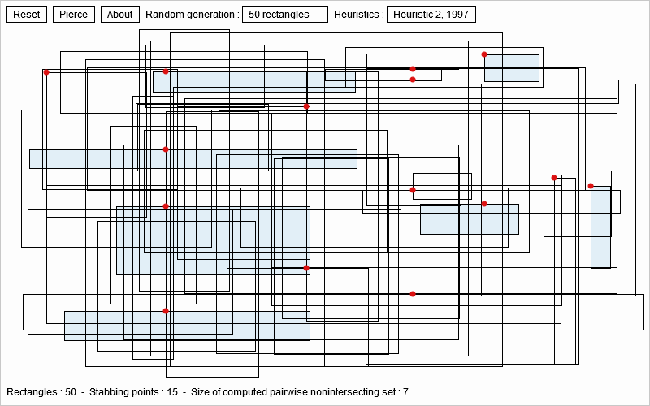

Fast stabbing of boxes in high dimensions
This page describes the implementation (Java, Processing sketch v3, and Javascript via processing.js) of the paper:
pdf Fast stabbing of boxes in high dimensions,
Theoretical Computer Science 246(1-2): 53-72 (2000)
pdf screenshots: stabbing-snapshot-1.pdf
stabbing-snapshot-2.pdf
stabbing-snapshot-3.pdf
This work has then been extended to c-oriented polygons in
pdf On point covers of c-oriented polygons. Theoretical Computer Science 263(1-2): 17-29 (2001).
and in practice several heuristics have been compared (epsilon-nets, etc.):
pdf Combinatorial optimization algorithms for radio network planning. Theor. Comput. Sci. 263(1-2): 235-245 (2001)
The Javascript demo has been tested on Firefox browser (it is processing program ran using processing.js).
If the program does not run, you can see a snapshot 
Mouse left-click+drag for adding a box or select from the menu for adding many random boxes
The heuristics compute in output-sensitive time an approximation of :
- Non-overlapping boxes: A maximum independent set of axis-parallel rectangles (also called isothetic d-dimensional boxes, independent set into k pairwise non-connected vertices)
- Stabbing/Piercing/Covering boxes: A minimum clique cover of axis-parallel rectangles (vertices of a graph can be partitioned into k cliques)
without computing the intersection graph (that would require quadratic time).
- The Java applet source code StabbingPiercingBoxes.java.
The applet can be run online from here (You need a Java plug-in in your browser)
- The processing source code pde.
By pressing the 'p' key, you can save in pdf format (this functionality does not work from Javascript).
Here are some pdfs produced from the processing sketch:
stabbing-snapshot-1.pdf
stabbing-snapshot-2.pdf
stabbing-snapshot-3.pdf
- Fast stabbing of boxes in high dimensions. Theoretical Computer Science 246(1-2): 53-72 (2000).
pdf
- On point covers of c-oriented polygons. Theoretical Computer Science 263(1-2): 17-29 (2001).
pdf
- Combinatorial optimization algorithms for radio network planning. Theor. Comput. Sci. 263(1-2): 235-245 (2001)
pdf
Original Java applet program by Frank Nielsen (1996-1998), with processing code v3 adapted by Antoine Chatalic (2015).
(C) 2015 Frank Nielsen, All rights reserved.